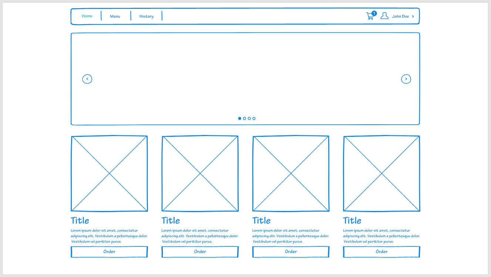
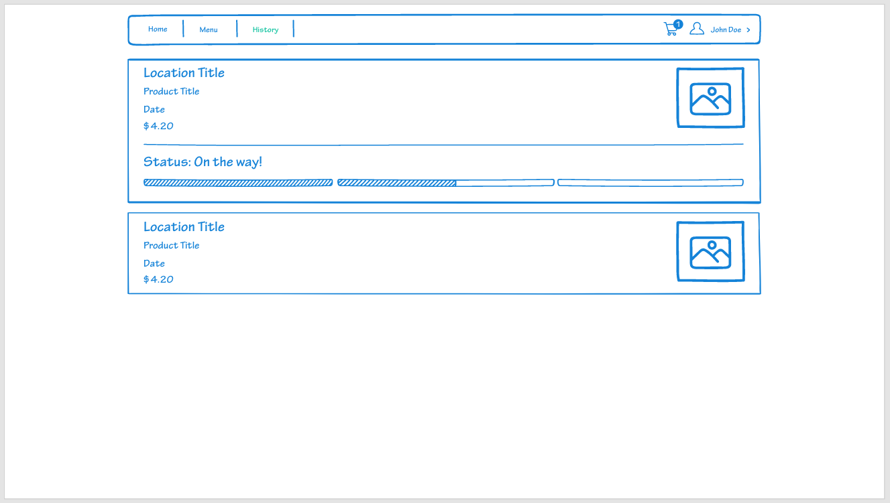
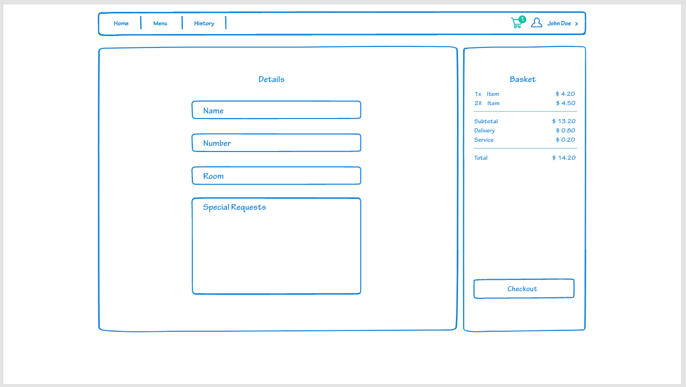

The practical outcomes for this unit are:
In using the design thinking (DT) methodology as a lens this assessment represents the
phases of the overarching DT methodology. In other words, you will identify a problem in students every-day lives (empathise), clearly define this problem (define) and propose a solution (ideate).
#Deliverables You are required to deliver a 2,500 word academic styled report which includes a link to your mock-up. The report should include the section presented below.
#Report Structure #1.0 Introduction This section should provide a background to the problem that you are addressing, the approach you used to explore the problem and your key findings.
#2.0 Methods/Methodology ##2.1 Overarching Methodology
###Design Thinking
Design Thinking is the methadology I have chosen to make use of due to its highly user-centric and progressive core values. Specifically after reading up on its four principles that were laid out by Christoph Meinel and Harry Leifer from Stanford University, as discussed below, I was certain this is ideal for the project.
The human rule:
The ambiguity rule
The redesign rule
The tangibility rule
///// TODO
The Five Phases The phases of Design Thinking that influenced the modern day process were coined by Nobel Prize laureate Herbert Simon in 1969, and originally included 7 steps. Modern versions of the process include anywhere from 5-6 steps. For the purpose of this post, I use the simple 5 step process proposed by the Hasso-Plattner Institute of Design at Stanford.
Empathize The empathize stage is critical to understand where the problems you are trying to solve come from. Immerse yourself into the life of your user to understand their problems. This can also be thought of as finding “gaps in the market”, where there are no straightforward product solutions to a given issue. Identify the need and address it. This phase focuses on research.
Define Now that a need is identified and research is collected, you can define the problem in human-centric terms. You want this problem to be broad enough for a flexible and creative approach, but narrow enough to hone in on the problems niche.
An example of a successful human-centric problem definition could be:
“Professionals need a way to virtually take notes, mark their calendar, set reminders, and sync them for access on work and home devices to streamline organization.”
A popular way to generate ideas is with a brainstorm. Arrange a meeting with at least four people to start off. Try to come up with as many phrases or word associations as you can — no limits, no rules! Bring in a couple individuals from other teams. People with outside experience contribute valuable ideas by looking at the problem through an alternative lens. The ideate phase focuses on free thinking and unconventional approaches.
Prototype Using the best ideas from the ideate phase, you can now produce several basic iterations of your problem solving product. Early stages of the prototype phase are generally where user testing allows designers to identify kinks or missing elements of their designs. This stage focuses on experimenting by creating multiple approaches to solving the problem.
Test The final stage of the design thinking process, designers now combine the best solutions from the prototype phase into one complete product. This phase involves the most user-testing.
However, the design thinking phases are not linear and the test phase is not a strict ending point. Often, testing the final product surfaces new problems and is followed by another define phase, or redirects designers to the empathy phase to work on building a deeper understanding of the user. Even if designers do not need to back track to different phases, the test phase focuses on fine-tuning the product to create the best possible solution.
///// TODO
##2.2 Methods You should present the methods that you used. Methods can be considered the tasks, tools and techniques that you used to gain an understanding of the proposed problem and allowed you to hypothesise a solution (e.g. interviews, focus group, surveys or observations). You may use a single method (e.g. interview, focus groups or surveys) or several. Given the scope of the project, I am expecting a sample of around 5 to 10 students for focus groups/interviews, and 20+ for surveys.
#3.0 Ethics You should present a brief account of the ethical considerations and acknowledgment that you have gained ethical clearance.
#4.0 Discussion and Results This section presents the finding and outcomes of the methodology and methods that you employed. The primary focus will be on the outcomes of user testing.
##4.1 Prototype
Below you can find a detailed mockup of my solution to this problem with key features explained and justified following it. I made use of Adobe XD to produce this with one of their free XD Kits, specifically the haqnd drawn kit.
https://xd.adobe.com/view/5583c407-bf60-46d7-b83f-b1b2550fb096-00d0/
///// TODO



///// TODO
#5.0 Conclusion Conclude your overall findings, and propose a clear forward facing path.
#Reference List